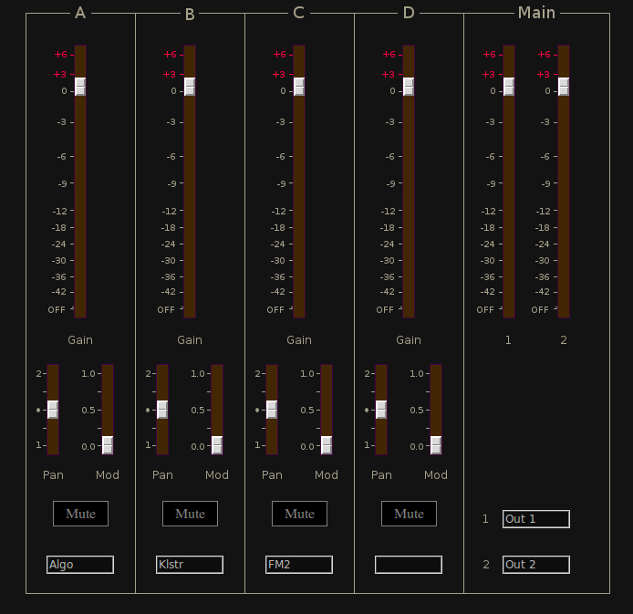

Mixer

| Home | Contents | Synth Catalog | Previous: Hund Envelope Follower | Next: Panner |
4 In 2 Out Mixer
 Channel controls:- Gain -
- Pan -
- Mod - Modulation depth from external control.
- Mute - Channel enable button
- Labels - The widgets at the bottom of each channel and Main fader area
are for channel labels.
The user may enter text here as a reminder of the channels use.
The text is saved by the compose and zip features.
Buses:
- inbusA - channel A input
- inbusB - channel B input
- inbusC - channel C input
- inbusD - channel D input
- outbus1 - main output 1
- outbus2 - main output 2
- xbus - control input
Parameters:
For channel X
- gainX - channel linear gain (0 ... 2)
- muteX - channel enable (0 = enable, 1 = mute)
- modX - external modulation depth (0 ... 1)
- panX - output pan (-1 ... +1)
- gain1 - output 1 gain (0 ... 2)
- gain2 - output 2 gain (0 ... 2)
| Home | Contents | Synth Catalog | Previous: Hund Envelope Follower | Next: Panner |